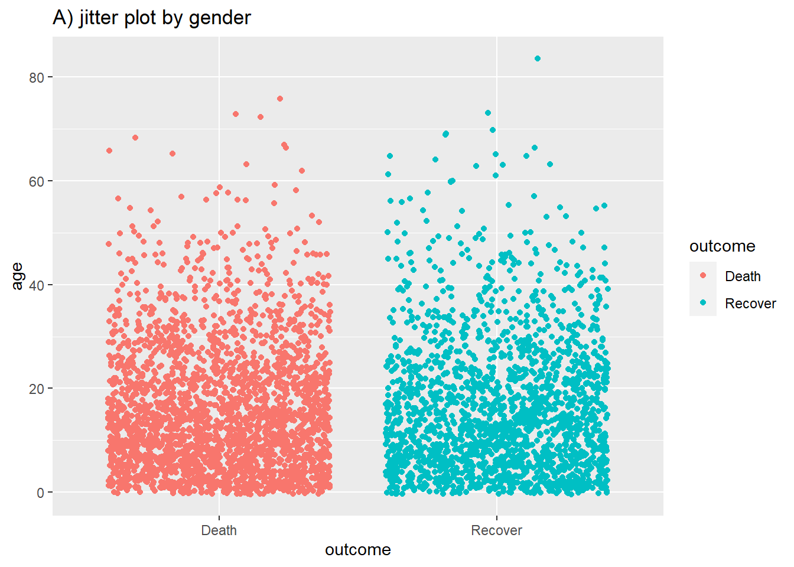

30 ggplot cơ bản

ggplot2 là một package dùng để trực quan hóa dữ liệu phổ biến nhất trong R. Các hàm ggplot() là nền tảng của package này, và toàn bộ cách tiếp cận này thường được gọi là “ggplot” với các số liệu kết quả đôi khi được gọi trìu mến là “ggplots”. Chữ “gg” bắt nguồn từ chữ “grammar of graphics” (ngữ pháp đồ thị) dùng để xây dựng các biểu đồ. ggplot2 được hưởng lợi từ nhiều package R bổ sung giúp nâng cao hơn nữa chức năng của nó.
Cú pháp của nó khác biệt đáng kể so với vẽ biểu đồ bằng base R, cũng như có một đường cong học tập gắn với nó. Sử dụng ggplot2 thông thường yêu cầu người sử dụng phải định dạng lại dữ liệu của họ để tương thích với tidyverse, giúp cho việc sử dụng các packages này cùng nhau một cách có hiệu quả.
Trong chương này, chúng tôi sẽ trình bày các nguyên tắc cơ bản về vẽ biểu đồ bằng ggplot2. Xem chương Các tips với ggplot để biết các gợi ý và các kỹ thuật nâng cao giúp cho biểu đồ của bạn thực sự trông đẹp mắt.
Có một số hướng dẫn ggplot2 mở rộng được liên kết trong phần tài nguyên học liệu. Bạn cũng có thể tải xuống trực quan hóa dữ liệu với ggplot cheatsheet từ trang web của RStudio. Nếu bạn muốn có cảm hứng cho các cách trực quan hóa dữ liệu của mình một cách sáng tạo, chúng tôi khuyên bạn nên ghé thăm các trang web như R graph gallery và Data-to-viz.
30.1 Chuẩn bị
Gọi packages
Đoạn code này hiển thị việc gọi các package cần thiết cho các phân tích. Trong cuốn sách này, chúng tôi nhấn mạnh việc sử dụng hàm p_load() từ package pacman, giúp cài đặt các package cần thiết và gọi chúng ra để sử dụng. Bạn cũng có thể gọi các packages đã cài đặt với hàm library() của base R. Xem thêm chương R cơ bản để có thêm thông tin về các packages trong R.
pacman::p_load(
tidyverse, # includes ggplot2 and other data management tools
rio, # import/export
here, # file locator
stringr # working with characters
)Nhập dữ liệu
Để bắt đầu, chúng ta nhập bộ dữ liệu có tên linelist đã làm sạch bao gồm các trường hợp từ vụ dịch Ebola mô phỏng. Để tiện theo dõi, bấm để tải dữ liệu linelist “đã được làm sạch” (dưới dạng tệp .rds). Nhập dữ liệu bằng hàm import() từ package rio (nó xử lý nhiều loại tệp như .xlsx, .csv, .rds - xem thêm chương Nhập xuất dữ liệu để biết thêm chi tiết).
linelist <- rio::import("linelist_cleaned.rds")50 hàng đầu tiên của bộ dữ liệu được hiển thị như bên dưới. Chúng ta sẽ tập trung và hai biến liên tục là age, wt_kg (cân nặng được tính bằng kilogram), ct_blood (giá trị CT), vàdays_onset_hosp (sự khác biệt giữa ngày khởi phát và nhập viện).
Làm sạch chung
Khi chuẩn bị dữ liệu để vẽ biểu đồ, tốt nhất là làm cho dữ liệu tuân thủ tiêu chuẩn dữ liệu “gọn gàng” nhất có thể. Để đạt được điều này, bạn có thể tham khảo chương Làm sạch số liệu và các hàm quan trọng trong cuốn sổ tay này.
Một số cách đơn giản mà chúng ta có thể chuẩn bị dữ liệu của mình để tốt hơn cho việc vẽ biểu đồ, có thể bao gồm việc làm cho nội dung của dữ liệu hiển thị tốt hơn - điều này không nhất thiết phải tương đương với việc bạn chuẩn bị dữ liệu tốt hơn để thao tác với dữ liệu. Ví dụ:
- Thay thế giá trị
NAtrong cột kiểu ký tự thành “Unknown”
- Cân nhắc chuyển đổi cột thành dạng factor để các giá trị của chúng được quy định một có thứ tự
- Làm sạch một số cột để các giá trị “thân thiện với dữ liệu” của chúng với dấu gạch dưới, v.v. được thay đổi thành văn bản bình thường hoặc chữ hoa tiêu đề (xem chương Ký tự và chuỗi)
Sau đây là một số ví dụ:
# make display version of columns with more friendly names
linelist <- linelist %>%
mutate(
gender_disp = case_when(gender == "m" ~ "Male", # m to Male
gender == "f" ~ "Female", # f to Female,
is.na(gender) ~ "Unknown"), # NA to Unknown
outcome_disp = replace_na(outcome, "Unknown") # replace NA outcome with "unknown"
)Xoay trục dài hơn
Về cấu trúc dữ liệu, đối với ggplot2 chúng ta thường muốn xoay trục dữ liệu sang định dạng dài hơn. Xem thêm ở chương Xoay trục dữ liệu.

Ví dụ, chúng ta muốn vẽ biểu đồ dữ liệu đang ở định dạng “ngang”, chẳng hạn từng trường hợp trong bộ dữ liệu linelist và các triệu chứng của chúng. Dưới đây chúng ta sẽ tạo một bộ dữ liệu nhỏ từ linelist gọi là symptoms_data chỉ chứa case_id và các cột triệu chứng.
symptoms_data <- linelist %>%
select(c(case_id, fever, chills, cough, aches, vomit))Đây là 50 dòng đầu tiên của bộ dữ liệu mới được tạo ra - hãy xem cách chúng được định dạng lại với mỗi triệu chứng là một cột:
Nếu chúng ta muốn lập biểu đồ số trường hợp có các triệu chứng cụ thể, chúng ta bị giới hạn bởi thực tế là mỗi triệu chứng là một cột khác nhau. Tuy nhiên, chúng ta có thể xoay các cột triệu chứng sang một định dạng dài hơn như sau:
symptoms_data_long <- symptoms_data %>% # begin with "mini" linelist called symptoms_data
pivot_longer(
cols = -case_id, # pivot all columns except case_id (all the symptoms columns)
names_to = "symptom_name", # assign name for new column that holds the symptoms
values_to = "symptom_is_present") %>% # assign name for new column that holds the values (yes/no)
mutate(symptom_is_present = replace_na(symptom_is_present, "unknown")) # convert NA to "unknown"Dưới đây là danh sách 50 dòng đầu tiên. Lưu ý rằng với mỗi trường hợp sẽ có 5 dòng - mỗi dòng tương ứng với một triệu chứng có thể xảy ra. Các cột mới có tên symptom_name và symptom_is_present là kết quả của việc xoay trục dữ liệu. Lưu ý rằng định dạng này có thể không hữu ích cho các hoạt động khác, nhưng rất hữu ích cho việc vẽ biểu đồ.
30.2 Các khái niệm cơ bản của ggplot
“Ngữ pháp đồ thị” - ggplot2
Vẽ đồ thị với ggplot2 dựa trên việc “thêm” các lớp đồ thị và các phần tử thiết kế chồng lên nhau, với mỗi lệnh được thêm vào các lệnh trước bằng một dấu cộng (+). Kết quả là một đối tượng biểu đồ nhiều lớp có thể được lưu, sửa đổi, in, xuất ra, v.v.
Các đối tượng ggplot có thể rất phức tạp, nhưng thứ tự cơ bản của các lớp thường sẽ giống như sau:
- Bắt đầu với lớp nền bằng lệnh
ggplot()- lệnh này “mở” ggplot và cho phép các hàm tiếp theo được thêm vào với dấu+. Thông thường, tập dữ liệu cũng được chỉ định trong lệnh này
- Thêm các lớp “geom” - các hàm này trực quan hóa dữ liệu dưới dạng geometries - hình học (shapes - hình dạng), ví dụ: biểu đồ cột, biểu đồ đường, biểu đồ phân tán, histogram (hoặc là sự kết hợp giữa chúng!). Tất cả các hàm này đều bắt đầu với tiền tố
geom_.
- Thêm các yếu tố thiết kế vào đồ thị, chẳng hạn như nhãn trục, tiêu đề, phông chữ, kích thước, phối màu, chú giải hoặc xoay trục
Một ví dụ đơn giản về bộ khung code như dưới đây. Chúng tôi sẽ giải thích từng cấu phần trong các phần bên dưới.
# plot data from my_data columns as red points
ggplot(data = my_data)+ # use the dataset "my_data"
geom_point( # add a layer of points (dots)
mapping = aes(x = col1, y = col2), # "map" data column to axes
color = "red")+ # other specification for the geom
labs()+ # here you add titles, axes labels, etc.
theme() # here you adjust color, font, size etc of non-data plot elements (axes, title, etc.)
30.3 ggplot()
Lệnh mở đầu của bất kỳ biểu đồ ggplot2 nào cũng là ggplot(). Lệnh này chỉ đơn giản là tạo ra một khung trống để thêm các lớp. Nó “mở ra” con đường cho các lớp tiếp theo được thêm vào với dấu +.
Thông thường, lệnh ggplot() bao gồm đối số data = cho biểu đồ. Việc này giúp thiết lập bộ dữ liệu mặc định được sử dụng cho các lớp tiếp theo của biểu đồ.
Lệnh này sẽ kết thúc bằng một dấu + sau dấu ngoặc đơn đóng cuối cùng của hàm. Điều này giúp lệnh “mở” trở lại. ggplot sẽ chỉ thực thi/xuất hiện khi lệnh đầy đủ bao gồm một lớp cuối cùng mà không có dấu + ở cuối.
# This will create plot that is a blank canvas
ggplot(data = linelist)30.4 Geoms
Một khung trống chắc chắn là không đủ - chúng ta cần tạo thêm các hình học (dạng) từ dữ liệu (vd: biểu đồ cột, histograms, biểu đồ phân tán, box plots).
Điều này được thực hiện bằng cách thêm các lớp “geoms” vào lệnh ggplot() ban đầu. Có rất nhiều hàm ggplot2 có thể tạo ra các “geoms”. Mỗi hàm này bắt đầu bằng “geom_”, vì vậy chúng tôi sẽ gọi chúng một cách chung chung là geom_XXXX(). Có hơn 40 loại geoms trong ggplot2 và rất nhiều cái khác được tạo ra bởi cộng đồng. Xem chúng tại thư viện ggplot2. Một số geom phổ biến được liệt kê dưới đây:
- Histograms -
geom_histogram()
- Biểu đồ cột -
geom_bar()hoặcgeom_col()(xem mục “Biểu đồ cột”)
- Box plots -
geom_boxplot()
- Điểm (vd: biểu đồ phân tán) -
geom_point()
- Biểu đồ đường -
geom_line()hoặcgeom_path()
- Đường xu hướng -
geom_smooth()
Trong một biểu đồ, bạn có thể hiển thị một hoặc nhiều geoms. Chúng sẽ được thêm vào các lệnh ggplot2 trước đó bằng dấu +, và chúng được vẽ theo thứ tự sao cho các geoms sau được vẽ lên phía trên của geoms trước đó.
30.5 Chọn dữ liệu cho biểu đồ
Hầu hết các hàm geom phải được cho biết cái gì được sử dụng để vẽ biểu đồ - vì vậy bạn phải cung cấp cách map (gán) các biến số trong dữ liệu của bạn tới các thành phần của biểu đồ như là các trục, màu đối tượng, kích thước đối tượng, v.v. Đối với hầu hết các geoms, các thành phần thiết yếu phải được gán tới các cột trong dữ liệu là trục x, và (nếu cần) là trục y.
Việc “mapping” được thực hiện bằng đối số mapping = của hàm. Giá trị bạn cung cấp tới mapping phải được gói trong hàm aes(), vì vậy bạn sẽ viết một cái gì đó kiểu như mapping = aes(x = col1, y = col2), như được trình bày bên dưới.
Dưới đây, trong lệnh ggplot(), dữ liệu được thiết lập là các trường hợp trong bộ linelist. Trong đối số mapping = aes(), cột age được gán cho trục x, và cột wt_kg được gán cho trục y.
Sau dấu +, các lệnh vẽ biểu đồ được tiếp tục. Một đối tượng được tạo bằng hàm “geom” thông qua geom_point(). Geom này kế thừa các thông số được gán từ lệnh ggplot() bên trên - nó biết các trục được gán và tiếp tục trực quan hóa mối quan hệ giữa chúng dưới dạng các điểm trên khung vẽ.
ggplot(data = linelist, mapping = aes(x = age, y = wt_kg))+
geom_point()
Một ví dụ khác, lệnh sau sử dụng bộ số liệu tương tự, chỉ có một sự khác biệt nhỏ về cách mapping và hàm geom. Hàm geom_histogram() chỉ yêu cầu gán cột cho trục x, bởi vì trục số lượng y được tạo ra một cách tự động.
ggplot(data = linelist, mapping = aes(x = age))+
geom_histogram()
Thẩm mỹ đồ thị
Trong ggplot, thuật ngữ “thẩm mỹ đồ thị” có một ý nghĩa đặc biệt. Nó đề cập đến một thuộc tính trực quan của dữ liệu được vẽ. Lưu ý rằng “thẩm mỹ” ở đây đề cập đến dữ liệu đưuợc vẽ bằng các geoms/shapes - không phải các thành phần hiển thị xung quanh như là tiêu đề, nhãn của trục, màu nền, mà bạn có thể liên kết với từ “thẩm mỹ” trong tiếng Anh thông dụng. Trong ggplot, những chi tiết đó được gọi là “chủ đề” và được điều chỉnh trong lệnh theme()(xem phần này).
Do đó, thẩm mỹ của đối tượng biểu đồ có thể là màu sắc, kích thước, độ trong suốt, vị trí, v.v. của dữ liệu được vẽ. Không phải tất cả các geoms sẽ có các tùy chọn thẩm mỹ giống nhau, nhưng một số tùy chọn được áp dụng với phần lớn các geoms. Dưới đây là một số ví dụ:
-
shape =Hiển thị một điểm với hàmgeom_point()dưới dạng dấu chấm, ngôi sao, hình tam giác hoặc hình vuông…
-
fill =Màu sắc bên trong (vd: của cột hoặc boxplot)
-
color =Đường bên ngoài của cột, boxplot, v.v., hoặc màu của điểm nếu sử dụng hàmgeom_point()
-
size =Kích thước (vd: độ dày của đường, kích thước của điểm)
-
alpha =Độ trong suốt (1 = bình thường, 0 = vô hình)
-
binwidth =Độ rộng các bins trong biểu đồ histogram
-
width =Độ rộng của các cột trong “biểu đồ cột”
-
linetype =Kiểu của đường (vd: liền, nét đứt, chấm chấm)
Thẩm mỹ của đối tượng biểu đồ có thể được gán giá trị theo hai cách:
- Gán một giá trị tĩnh (vd:
color = "blue") để áp dụng cho tất cả các quan sát được vẽ biểu đồ
- Gán cho một cột của dữ liệu (vd:
color = hospital) để hiển thị từng quan sát phụ thuộc vào giá trị của nó trong cột đó
Gán một giá trị tĩnh
Nếu bạn muốn yếu tố thẩm mỹ cho đối tượng biểu đồ là tĩnh, nghĩa là - giống nhau đối với mọi quan sát trong dữ liệu, bạn viết phép gán của nó bên trong geom nhưng ở bên ngoài của bất cứ đối số mapping = aes() nào. Các phép gán này có thể trông như này size = 1 hoặc color = "blue". Sau đây là hai ví dụ:
- Trong ví dụ đầu tiên, đối số
mapping = aes()ở bên trong hàmggplot()và các trục được gán tới cột age và weight trong bộ dữ liệu. Các yếu tố thẩm mỹ như làcolor =,size =, vàalpha =(độ trong suốt) được gán các giá trị tĩnh. Để rõ ràng, điều này được thực hiện trong hàmgeom_point(), vì bạn có thể thêm các geom khác sau đó mà sẽ nhận các giá trị khác nhau cho các yếu tố thẩm mỹ của biểu đồ.
- Trong ví dụ thứ hai, biểu đồ histogram chỉ yêu cầu trục x được gán với một cột. Các thông số của biểu đồ histogram như
binwidth =,color =,fill =(màu sắc bên trong), vàalpha =một lần nữa được đặt trong geom thành các giá trị tĩnh.
# scatterplot
ggplot(data = linelist, mapping = aes(x = age, y = wt_kg))+ # set data and axes mapping
geom_point(color = "darkgreen", size = 0.5, alpha = 0.2) # set static point aesthetics
# histogram
ggplot(data = linelist, mapping = aes(x = age))+ # set data and axes
geom_histogram( # display histogram
binwidth = 7, # width of bins
color = "red", # bin line color
fill = "blue", # bin interior color
alpha = 0.1) # bin transparency

Vẽ theo tỷ lệ giá trị của cột
Một cách khác đó là vẽ theo tỷ lệ giá trị của cột các đối tượng thẩm mỹ của biểu đồ. Theo cách tiếp cận này, việc hiển thị các đối tượng thẩm mỹ sẽ phụ thuộc vào giá trị của quan sát trong cột dữ liệu đó. Nếu các giá trị cột là liên tục, thang đo hiển thị (chú giải) cho thẩm mỹ đó sẽ là liên tục. Nếu các giá trị cột là rời rạc, chú giải sẽ hiển thị từng giá trị và dữ liệu được vẽ biểu đồ sẽ xuất hiện dưới dạng “được nhóm” (đọc thêm ở mục Nhóm trong chương này).
Để đạt được điều này, bạn gán yếu tố thẩm mỹ của biểu đồ với một tên cột (không trong dấu ngoặc kép). Điều này phải được thực hiện bên trong một hàm mapping = aes() (lưu ý: có một số vị trí trong code mà bạn có thể thực hiện các phép gán, như được thảo luận bên dưới).
Hai ví dụ như sau.
- Ở ví dụ đầu tiên, yếu tố thẩm mỹ
color =(của mỗi điểm) được gán cho cộtage- và thang đo liên tục được xuất hiện dưới dạng chú thích! Hiện tại bạn chỉ cần quan tâm tới sự xuất hiện của thanh này - chúng ta sẽ học cách chỉnh sửa nó trong các phần sau.
- Trong ví dụ thứ hai, hai yếu tố thẩm mỹ được gán cho hai cột tương ứng (
color =vàsize =), trong khishape =vàalpha =được gán cho các giá trị tĩnh bên ngoài đối sốmapping = aes().
# scatterplot
ggplot(data = linelist, # set data
mapping = aes( # map aesthetics to column values
x = age, # map x-axis to age
y = wt_kg, # map y-axis to weight
color = age)
)+ # map color to age
geom_point() # display data as points
# scatterplot
ggplot(data = linelist, # set data
mapping = aes( # map aesthetics to column values
x = age, # map x-axis to age
y = wt_kg, # map y-axis to weight
color = age, # map color to age
size = age))+ # map size to age
geom_point( # display data as points
shape = "diamond", # points display as diamonds
alpha = 0.3) # point transparency at 30%

Lưu ý: Các phép gán trục luôn được gán cho các cột trong dữ liệu (không phải cho các giá trị tĩnh) và điều này luôn được thực hiện với mapping = aes().
Điều quan trọng là phải theo dõi các lớp của biểu đồ và các đối tượng thẩm mỹ khi vẽ các biểu đồ phức tạp - ví dụ biểu đồ được cấu thành từ nhiều geoms. ITrong ví dụ dưới đây, size = được gán hai lần - một lần cho geom_point() và một lần cho geom_smooth() - cả hai lần đều là giá trị tĩnh.
ggplot(data = linelist,
mapping = aes( # map aesthetics to columns
x = age,
y = wt_kg,
color = age_years)
) +
geom_point( # add points for each row of data
size = 1,
alpha = 0.5) +
geom_smooth( # add a trend line
method = "lm", # with linear method
size = 2) # size (width of line) of 2
Thực hiện phép gán ở đâu
Việc gán các yếu tố thẩm mỹ bên trong đối số mapping = aes() có thể được viết ở một số chỗ trong các lệnh vẽ biểu đồ và thậm chí có thể được viết nhiều lần. Nó có thể được viết trong lệnh ggplot() trên cùng, và/hoặc cho từng geom riêng lẻ bên dưới. Các kiểu viết bao gồm:
- Các phép gán được thực hiện ở lệnh
ggplot()trên cùng sẽ được mặc định kế thừa ở bất kỳ các geom bên dưới, giống như cách màx =vày =được kế thừa - Các phép gán được thực hiện trong một geom chỉ áp dụng cho geom đó
Tương tự, data = được chỉ định cho lệnh ggplot() ở trên đầu sẽ áp dụng mặc định cho tất cả các geom bên dưới, nhưng bạn vẫn có thể chỉ định data riêng cho từng geom (nhưng sẽ khó hơn).
Do đó, mỗi lệnh sau sẽ tạo ra cùng một biểu đồ giống nhau:
# These commands will produce the exact same plot
ggplot(data = linelist, mapping = aes(x = age))+
geom_histogram()
ggplot(data = linelist)+
geom_histogram(mapping = aes(x = age))
ggplot()+
geom_histogram(data = linelist, mapping = aes(x = age))Nhóm
Bạn có thể dễ dàng nhóm dữ liệu và “vẽ biểu đồ theo nhóm”. Trên thực tế, bạn đã làm điều này rồi!
Gán cột “phân nhóm” với yếu tố thẩm mỹ biều đồ phù hợp, bên trong đối số mapping = aes(). Ở bên trên, chúng ta đã minh họa nó bằng cách sử dụng các giá trị liên tục khi gán điểm size = tới cột age. Tuy nhiên, cách này cũng hoạt động theo cùng một cơ chế đối với các cột rời rạc/phân loại.
Ví dụ, nếu bạn muốn các điểm được hiển thị theo giới, bạn sẽ đặt mapping = aes(color = gender). Một chú giải tự động hiện lên. Phép gán này có thể được thực hiện bên trong mapping = aes() ở lệnh ggplot() đầu tiên (và được thừa kế bởi các geom), hoặc nó thể được đặt trong một mapping = aes() riêng biệt bên trong geom. Cả hai cách tiếp cận được trình bày dưới đây:
ggplot(data = linelist,
mapping = aes(x = age, y = wt_kg, color = gender))+
geom_point(alpha = 0.5)
# This alternative code produces the same plot
ggplot(data = linelist,
mapping = aes(x = age, y = wt_kg))+
geom_point(
mapping = aes(color = gender),
alpha = 0.5)Lưu ý rằng tùy thuộc vào loại geom bạn sử dụng, bạn sẽ cần sử dụng các đối số khác nhau để nhóm dữ liệu. Đối với geom_point(), bạn sẽ thường sử dụng nhất các tham số như color =, shape = hoặc size =. Trong khi đó đối với geom_bar(), bạn thường sử dụng nhất tham số fill =. Điều này chỉ phụ thuộc vào loại geom và yếu tố trang trí nào bạn muốn thể hiện sự phân nhóm.
Cách cơ bản nhất để nhóm dữ liệu là chỉ sử dụng đối số group = bên trong mapping = aes(). Tuy nhiên, cách này tự nó sẽ không làm thay đổi màu sắc, hình dạng hoặc tạo ra chú thích. Tuy nhiên dữ liệu được nhóm lại, do đó hiển thị thống kê có thể bị ảnh hưởng.
Để thay đổi thứ tự của các nhóm trong biểu đồ, xem chương Các tips với ggplot hoặc chương Factors. Ngoài ra cũng có rất nhiều ví dụ về các biểu đồ được nhóm trong các phần bên dưới đối với dữ liệu dạng liên tục và danh mục.
30.6 Facets / Chia nhỏ biểu đồ
Facets, hay “chia nhỏ biểu đồ”, được sử dụng để chia một biểu đồ thành nhiều phần nhỏ, với mỗi phần (“facet”) đại diện cho một nhóm của dữ liệu. Các biểu đồ giống nhau được tạo nhiều lần, mỗi cái sử dụng một phân nhóm của cùng một bộ dữ liệu.
Faceting là một chức năng đi kèm với ggplot2, vì vậy các chú giải và trục của các biểu đồ nhỏ được căn chỉnh tự động. Có các package khác được thảo luận trong chương Các tips với ggplot được sử dụng để kết hợp các biểu đồ hoàn toàn khác nhau (cowplot và patchwork) thành một biểu đồ.
Faceting được thực hiện bằng các hàm ggplot2 sau đây:
-
facet_wrap()Để hiện thị các biểu đồ khác nhau cho từng thứ bậc của một biến số đơn lẻ. Một ví dụ như thể hiện các đường cong dịch bệnh khác nhau cho từng bệnh viện trong khu vực. Các facets được sắp xếp theo thứ tự bảng chữ cái, trừ khi biến có kiểu factor với các thứ bậc đã được xác định.
- Bạn có thể sử dụng một số tùy chọn nhất định để xác định bố cục của các facets, vd:
nrow = 1hoặcncol = 1để kiểm soát số hàng hoặc cột mà chúng được sắp xếp.
-
facet_grid()Áp dụng khi bạn muốn đưa một biến thứ hai vào sắp xếp các biểu đồ con. Ở đây mỗi ô thể hiện sự giao nhau của các giá trị giữa hai cột. Ví dụ, các đường cong dịch bệnh cho từng sự kết hợp của bệnh viện-nhóm tuổi với các bệnh viện dọc theo phía đỉnh (các cột) và các nhóm tuổi dọc theo hai bên (các hàng).
-
nrowvàncolkhông được áp dụng, bởi vì các phân nhóm được trình bày dưới dạng lưới
Mỗi hàm này chấp nhận một cú pháp công thức để chỉ định cột được faceting. Cả hai đều chấp nhận tối đa hai cột, mỗi cột ở một bên dấu ngã ~.
Đối với
facet_wrap(), bạn sẽ thường chỉ viết một cột trước dấu ngã~chẳng hạn nhưfacet_wrap(~hospital). Tuy nhiên, bạn vẫn có thể viết hai cột, ví dụfacet_wrap(outcome ~ hospital)- mỗi kết hợp duy nhất sẽ hiển thị trong một ô riêng biệt, nhưng chúng sẽ không được sắp xếp trong một lưới. Các tiêu đề sẽ hiển thị các thuật ngữ kết hợp và chúng sẽ không phải là logic cụ thể cho các cột so với các hàng. Nếu bạn đang chỉ cung cấp một biến số để faceting, dấu chấm.được sử dụng như để giữ chỗ cho phía bên kia của công thức - hãy xem các ví dụ về code.Đối với
facet_grid()bạn cũng có thể chỉ định một hoặc hai cột tới công thức (gridrows ~ columns). Nếu bạn chỉ muốn chỉ định một cột, hãy đặt một dấu chấm.ở một phía của dấu ngã chẳng hạn nhưfacet_grid(. ~ hospital)hoặcfacet_grid(hospital ~ .).
Facets có thể chứa một lượng lớn thông tin - vì vậy bạn nên đảm bảo những biến số được lựa chọn để facets không có quá nhiều thứ bậc. Dưới đây là một số ví dụ nhanh với tập dữ liệu sốt rét (xem chương Tải sách và dữ liệu) bao gồm số lượng trường hợp sốt rét hàng ngày của các cơ sở theo nhóm tuổi..
Sau đây chúng ta nhập số liệu vào và thực hiện một số biến đổi để đơn giản hóa:
# These data are daily counts of malaria cases, by facility-day
malaria_data <- import(here("data", "malaria_facility_count_data.rds")) %>% # import
select(-submitted_date, -Province, -newid) # remove unneeded columns50 hàng đầu tiên của dữ liệu sốt rét được trình bày như bên dưới. Lưu ý rằng có một cột tên là malaria_tot, ngoài ra còn có các cột khác chứa thông tin về số lượng trường hợp theo nhóm tuổi (chúng sẽ được sử dụng trong ví dụ thứ hai với facet_grid()).
facet_wrap()
Tại thời điểm này, hãy chỉ tập trung vào các cột malaria_tot và District, tạm thời bỏ qua cột số lượng ca bệnh theo tuổi. Chúng ta sẽ vẽ các đường cong dịch bệnh với hàm geom_col(), giúp tạo ra một cột cho từng ngày với độ cao được xác định từ giá trị của cột malaria_tot (dữ liệu đã là số lượng hàng ngày, vì vậy chúng tôi sử dụng hàm geom_col() - xem mục “Biểu đồ cột” bên dưới).
Khi chúng ta thêm lệnh facet_wrap(), hãy thêm dấu ngã kèm với cột dùng để facet bên trong lệnh (trong trường hợp này là District). Bạn có thể đặt một cột khác ở bên trái của dấu ngã, - điều này sẽ tạo ra một facet cho từng sự kết hợp - nhưng chúng tôi khuyên bạn nên làm điều đó bằng hàm facet_grid(). Trong ví dụ này, chỉ một facet được tạo ra cho giá trị duy nhất của cột District.
# A plot with facets by district
ggplot(malaria_data, aes(x = data_date, y = malaria_tot)) +
geom_col(width = 1, fill = "darkred") + # plot the count data as columns
theme_minimal()+ # simplify the background panels
labs( # add plot labels, title, etc.
x = "Date of report",
y = "Malaria cases",
title = "Malaria cases by district") +
facet_wrap(~District) # the facets are created
facet_grid()
Chúng ta có thể sử dụng cách tiếp cận facet_grid() đối với hai biến. Giả sử chúng ta muốn thêm District and age vào biểu đồ của mình. Trước hết, chúng ta cần thực hiện một số biến đổi dữ liệu trên các cột tuổi để đưa những dữ liệu này sang định dạng “dài” được ggplot ưu tiên. Tất cả các nhóm tuổi đều có các cột riêng - chúng ta cần chúng nhập vào một cột duy nhất có tên age_group và một cột khasc có tên num_cases. Xem chương Xoay trục dữ liệu để hiểu thêm về quy trình này.
malaria_age <- malaria_data %>%
select(-malaria_tot) %>%
pivot_longer(
cols = c(starts_with("malaria_rdt_")), # choose columns to pivot longer
names_to = "age_group", # column names become age group
values_to = "num_cases" # values to a single column (num_cases)
) %>%
mutate(
age_group = str_replace(age_group, "malaria_rdt_", ""),
age_group = forcats::fct_relevel(age_group, "5-14", after = 1))50 hàng đầu tiên của dữ liệu trông giống như sau:
Khi bạn chuyển hai biến số tới facet_grid(), cách đơn giản nhất là sử dụng ký hiệu công thức (vd: x ~ y), trong đó x là hàng và y là cột. Dưới đây là biểu đồ, sử dụng facet_grid() để hiển thị các biểu đồ cho mỗi kết hợp của các cột age_group và District.
ggplot(malaria_age, aes(x = data_date, y = num_cases)) +
geom_col(fill = "darkred", width = 1) +
theme_minimal()+
labs(
x = "Date of report",
y = "Malaria cases",
title = "Malaria cases by district and age group"
) +
facet_grid(District ~ age_group)
Giới hạn trục tự do hoặc cố định
Theo mặc định, các tỷ lệ trục được hiển thị khi faceting là giống nhau (cố định) trên tất cả các facets. Điều này rất hữu ích cho việc so sánh chéo, nhưng không phải lúc nào cũng thích hợp.
Khi sử dụng facet_wrap() hoặc facet_grid(), chúng ta có thể thêm scales = "free_y" để “free” hoặc giải phóng trục y của các biểu đồ nhỏ chia tỷ lệ thích hợp với tập con dữ liệu của chúng. Điều này đặc biệt hữu ích nếu số lượng thực tế là nhỏ đối với một trong các danh mục phụ và khó có thể nhìn thấy xu hướng. Thay vì “free_y”, chúng ta cũng có thể viết “free_x” để làm tương tự đối với trục x (vd: biến ngày thág) hoặc “free” đối với cả hai trục. Lưu ý rằng trong facet_grid, tỷ lệ y sẽ giống nhau đối với các facets trong cùng một hàng và tỷ lệ x sẽ giống nhau đối với các facets trong cùng một cột.
Khi chỉ sử dụng facet_grid, chúng ta có thể thêm space = "free_y" hoặc space = "free_x" để chiều cao hoặc chiều rộng thực tế của facet được tính theo giá trị của biều đồ bên trong. Điều này chỉ hoạt động nếu scales = "free" (y hoặc x) đã được áp dụng.
# Free y-axis
ggplot(malaria_data, aes(x = data_date, y = malaria_tot)) +
geom_col(width = 1, fill = "darkred") + # plot the count data as columns
theme_minimal()+ # simplify the background panels
labs( # add plot labels, title, etc.
x = "Date of report",
y = "Malaria cases",
title = "Malaria cases by district - 'free' x and y axes") +
facet_wrap(~District, scales = "free") # the facets are created
Trật tự thức bậc của Factor trong facets
Xem bài viết này về cách làm thế nào để sắp xếp lại thức bậc của biến factor bên trong facets.
30.7 Lưu trữ biểu đồ
Lưu biểu đồ
Mặc định khi bạn chạy lệnh ggplot(), biểu đồ sẽ được in ở cửa số Plots của RStudio. Tuy nhiên, bạn cũng có thể lưu biểu đồ dưới dạng một đối tượng bằng cách sử dụng toán tử gán <- và đặt tên cho nó. Biểu đồ sẽ không được in ra trừ khi bạn gọi tên của đối tượng. Bạn cũng có thể in nó bằng cách đưa tên biểu đồ vào hàm print(), nhưng điều này chỉ cần thiết trong một số trường hợp nhất định chẳng hạn như khi biểu đồ được tạo bên trong một vòng lặp for để in nhiều biểu đồ cùng một lúc (xem chương Lặp, vòng lặp, và danh sách).
# define plot
age_by_wt <- ggplot(data = linelist, mapping = aes(x = age_years, y = wt_kg, color = age_years))+
geom_point(alpha = 0.1)
# print
age_by_wt 
Chỉnh sửa biều đồ đã lưu
Một điểm hay của ggplot2 là bạn có thể gán tên cho một biểu đồ (như bên trên), và sau đó thêm các lớp mới bắt đầu bằng tên của nó. Bạn không cần phải lặp lại tất cả các lệnh đã tạo ra biểu đồ ban đầu!
Ví dụ: để sửa đổi biểu đồ age_by_wt đã được định nghĩa ở bên trên, thêm một trục dọc tại tuổi bằng 50, chúng ta chỉ cần thêm dấu + và bắt đầu thêm các lớp bổ sung vào biểu đồ.
age_by_wt+
geom_vline(xintercept = 50)
Xuất biểu đồ
Việc xuất biểu đồ được thực hiện dễ dàng với hàm ggsave() của package ggplot2. Nó có thể hoạt động theo hai cách:
-
Chỉ định tên của đối tượng biểu đồ, sau đó là đường dẫn tệp và tên có phần mở rộng
- Ví dụ:
ggsave(my_plot, here("plots", "my_plot.png"))
- Ví dụ:
-
Chạy lệnh chỉ với một đường dẫn tệp, để lưu biểu đồ gần nhất được in ra
- Ví dụ:
ggsave(here("plots", "my_plot.png"))
- Ví dụ:
Bạn có thể xuất dưới dạng tệp png, pdf, jpeg, tiff, bmp, svg, hoặc một số định dạng khác, bằng cách chỉ định phần mở rộng tệp trong đường dẫn tệp.
Bạn cũng có thể chỉ định các đối số width =, height =, và units = (“in”, “cm”, hoặc “mm”). Bạn cũng có thể chỉ định dpi = để điều chỉnh độ phân giâỉ của biểu đồ (vd: dpi = 300). Xem hướng dẫn chi tiết về hàm bằng cách gõ ?ggsave hoặc đọc tài liệu online này.
Hãy nhớ rằng bạn có thể sử dụng cú pháp here() để cung cấp đường dẫn tệp mong muốn. Xem chương Nhập xuất dữ liệu để biết thêm thông tin.
30.8 Nhãn
Chắc chắn là bạn sẽ muốn thêm hoặc điều chỉnh nhãn của biểu đồ. Việc này được thực hiện dễ dàng nhất với hàm labs() bằng cách thêm dấu + như cách bạn thêm các geoms.
Bên trong hàm labs(), bạn có thể cung cấp các chuỗi ký tự cho các đối số sau:
-
x =vày =Tiêu đề trục x và trục y (nhãn)
-
title =Tiêu đề chính của biểu đồ
-
subtitle =Tiêu đề phụ của biểu đồ, nhỏ hơn và đặt bên dưới tiêu đề chính
-
caption =Caption của biểu đồ, mặc định ở góc phải dưới
Dưới đây là biểu đồ chúng ta đã tạo lúc trước, nhưng có thêm các nhãn:
age_by_wt <- ggplot(
data = linelist, # set data
mapping = aes( # map aesthetics to column values
x = age, # map x-axis to age
y = wt_kg, # map y-axis to weight
color = age))+ # map color to age
geom_point()+ # display data as points
labs(
title = "Age and weight distribution",
subtitle = "Fictional Ebola outbreak, 2014",
x = "Age in years",
y = "Weight in kilos",
color = "Age",
caption = stringr::str_glue("Data as of {max(linelist$date_hospitalisation, na.rm=T)}"))
age_by_wt
Hãy để ý chúng ta đã sử dụng hàm str_glue() từ package stringr để tạo một code R động bên trong văn bản khi gán giá trị cho caption. Caption sẽ hiển thị “Dữ liệu kể từ:” phản ánh ngày nhập viện gần nhất trong bộ dữ liệu linelist. Đọc thêm ở chương Ký tự và chuỗi.
Một chú ý khi bạn muốn thêm tiêu đề cho chú giải: Đó là không có đối số “legend title”, vì bạn có thể có nhiều thang đo trong chú giải của mình. Bên trong lệnh labs(), bạn có thể viết đối số cho yếu tố thẩm mỹ được sử dụng để tạo chú giải, và cung cấp tiêu đề cho nó theo cách này. Trong ví dụ bên trên, chúng ta đã gán color = age để tạo chú giải. Do đó, chúng ta cũng cung cấp đối số color = ttrong hàm labs() và gán tiêu đề chú giải mong muốn (“Age” với chữ A được viết hoa). Nếu bạn tạo chú thích bằng đối số aes(fill = COLUMN), thì trong lệnh labs() bạn nên viết fill = để điều chỉnh tiêu đề cho chú thích. Xem thêm mục thang đo màu sắc trong chương Các tips với ggplot để biết thêm chi tiết về cách chỉnh sửa chú giải và cách tiếp cận thay thế bằng cách sử dụng các hàm scales_().
30.9 Chủ đề
Một trong những phần hay nhất của ggplot2 là mức độ kiểm soát của bạn đối với biểu đồ - bạn có thể định nghĩa bất kỳ điều gì! Như đã đề cập ở trên, thiết kế của biểu đồ không liên quan tới dạng biểu đồ mà được điều chỉnh bên trong hàm theme(). Ví dụ, màu nền của biểu đồ, sự xuất hiện/biến mất của đường lưới, cũng như phông chữ/cỡ chữ/màu sắc/căn lề của văn bản (tiêu đề chính, tiêu đề phụ, captions, chữ trên các trục…). Những điều chỉnh này có thể được thực hiện theo hai cách:
- Thêm một chủ đề hoàn chỉnh bằng hàm
theme_()để điều chỉnh toàn bộ các thành phần biểu đồ - các chủ đề hoàn chỉnh này bao gồmtheme_classic(),theme_minimal(),theme_dark(),theme_light()theme_grey(),theme_bw() - Điều chỉnh từng khía cạnh đơn lẻ của biểu đồ với hàm
theme()
Chủ đề hoàn chỉnh
Vì chúng khá đơn giản, chúng tôi sẽ trình bày các hàm chủ đề hoàn chỉnh bên dưới và sẽ không mô tả thêm ở đây. Lưu ý rằng bất kỳ điều chỉnh nhỏ nào bằng hàm theme() nên được thực hiện sau khi áp dụng một chủ đề hoàn chỉnh.
Viết chúng với dấu ngoặc đơn trống.
ggplot(data = linelist, mapping = aes(x = age, y = wt_kg))+
geom_point(color = "darkgreen", size = 0.5, alpha = 0.2)+
labs(title = "Theme classic")+
theme_classic()
ggplot(data = linelist, mapping = aes(x = age, y = wt_kg))+
geom_point(color = "darkgreen", size = 0.5, alpha = 0.2)+
labs(title = "Theme bw")+
theme_bw()
ggplot(data = linelist, mapping = aes(x = age, y = wt_kg))+
geom_point(color = "darkgreen", size = 0.5, alpha = 0.2)+
labs(title = "Theme minimal")+
theme_minimal()
ggplot(data = linelist, mapping = aes(x = age, y = wt_kg))+
geom_point(color = "darkgreen", size = 0.5, alpha = 0.2)+
labs(title = "Theme gray")+
theme_gray()


Tùy chỉnh chủ đề
Hàm theme() có thể nhận một số lượng lớn các đối số, mỗi đối số sẽ chỉnh sửa một khía cạnh rất cụ thể của biểu đồ. Chúng tôi sẽ không trình bày tất cả các đối số, nhưng sẽ tập trung mô tả công thức chung cho chúng và chỉ cho bạn cách tìm tên đối số mà bạn cần. Cú pháp cơ bản là:
- Bên trong hàm
theme(), hãy viết tên đối số cho phần tử biểu đồ mà bạn muốn chỉnh sửa, chẳng hạn nhưplot.title =
- Cung cấp một hàm
element_()tới đối số
- Thường sử dụng nhất là
element_text(), một số khác bao gồmelement_rect()chọn màu nền cho canvas, hoặcelement_blank()để xóa các phần tử biểu đồ
- Bên trong hàm
element_(), xác định giá trị đối số cần gán để điều chỉnh theo ý bạn mong muốn
Vì trình bày bên trên vẫn khá trừu tượng, nên đây là một số ví dụ.
Lưu ý là biểu đồ dưới đây trông không thật sự đẹp, nhưng nó giúp bạn thấy nhiều cách khác nhau để bạn có thể điều chỉnh biểu đồ của mình.
- Chúng ta bắt đầu với biểu đồ có tên
age_by_wtđã được tạo ra bên trên và thêm hàmtheme_classic()
- Để điều chỉnh đẹp hơn, chúng ta thêm hàm
theme()và bao gồm một đối số cho từng phần tử biểu đồ muốn điều chỉnh
Sẽ rất tốt nếu bạn sắp xếp các đối số theo một trật tự logic. Hãy xem ví dụ sau:
-
legend.position =là đặc biệt nhất vì nó chỉ chấp nhận các giá trị đơn giản như “bottom”, “top”, “left”, và “right”. các đối số liên quan đến văn bản yêu cầu bạn đặt các chi tiết bên trong hàmelement_text().
- Cỡ chư tiêu đề với
element_text(size = 30)
- Căn lề caption với
element_text(hjust = 0)(từ trái qua phải)
- Tiêu đề phụ được in nghiêng với
element_text(face = "italic")
age_by_wt +
theme_classic()+ # pre-defined theme adjustments
theme(
legend.position = "bottom", # move legend to bottom
plot.title = element_text(size = 30), # size of title to 30
plot.caption = element_text(hjust = 0), # left-align caption
plot.subtitle = element_text(face = "italic"), # italicize subtitle
axis.text.x = element_text(color = "red", size = 15, angle = 90), # adjusts only x-axis text
axis.text.y = element_text(size = 15), # adjusts only y-axis text
axis.title = element_text(size = 20) # adjusts both axes titles
) 
Sau đây là một số đối số phổ biến của hàm theme(). Bạn sẽ nhận ra một số xu hướng chung, chẳng hạn như thêm .x hoặc .y để chỉ áp dụng thay đổi cho một trục.
Đối số theme() |
Những gì nó điều chỉnh |
|---|---|
plot.title = element_text() |
Tiêu đề chính |
plot.subtitle = element_text() |
Tiêu đề phụ |
plot.caption = element_text() |
Liên quan tới caption (kiểu font, màu sắc, kích cỡ, góc độ, vjust, hjust…) |
axis.title = element_text() |
Tiêu đề trục (cả trục x và y) (kích cỡ, góc độ, màu sắc…) |
axis.title.x = element_text() |
Chỉ tiêu đề trục x (sử dụng .y để chỉ áp dụng với trục y) |
axis.text = element_text() |
Văn bản trên trục (cả trục x và y) |
axis.text.x = element_text() |
Chỉ văn bản trục x (sử dụng .y để chỉ áp dụng với trục y) |
axis.ticks = element_blank() |
Loại bỏ ticks của trục |
axis.line = element_line() |
Đường trục (màu sắc, kích thước, kiểu đường: nét đứt, nét liền mảnh, v.v.) |
strip.text = element_text() |
Văn bản trong Facet strip (màu sắc, kích thước, góc độ…) |
strip.background = element_rect() |
facet strip (tô màu, màu sắc, kích thước…) |
Nhưng còn rất nhiều các đối số khác! Làm thế nào tôi có thể nhớ tất cả chúng? Đừng lo lắng - bạn không thể nhớ hết chúng được đâu. May mắn thay, có một vài công cụ có thể thể giúp bạn:
Tài liệu hướng dẫn của tidyverse phần tùy chỉnh chủ đề, có chứa một danh sách đầy đủ các đối số.
MẸO: Chạy lệnh theme_get() từ ggplot2 để in tất cả hơn 90 đối số của hàm theme() ra console.
MẸO: Nếu bạn muốn xóa một phần tử của biểu đồ, bạn cũng có thể làm điều đó bằng hàm theme(). Chỉ cần đặt element_blank() tới đối số để nó biến mất hoàn toàn. Đối với chú thích, thiết lập legend.position = "none".
30.10 Màu sắc
Xem mục thang đo cho màu sắc trong chương Các tips với ggplot.
30.11 Piping tới ggplot2
Khi sử dụng pipes để làm sạch và chuyển đổi dữ liệu của bạn, bạn có thể dễ dàng chuyển dữ liệu đã chuyển đổi tới ggplot().
Các pipes sẽ chuyển dữ liệu từ hàm-tới-hàm và sẽ chuyển tới dấu + một khi hàm ggplot() được gọi. Lưu ý rằng trong trường hợp này, không cần chỉ định đối số data =, bởi vì nó đã được tự động xác định khi bạn piping dữ liệu.
Dưới đây là cách mà nó hoạt động:
linelist %>% # begin with linelist
select(c(case_id, fever, chills, cough, aches, vomit)) %>% # select columns
pivot_longer( # pivot longer
cols = -case_id,
names_to = "symptom_name",
values_to = "symptom_is_present") %>%
mutate( # replace missing values
symptom_is_present = replace_na(symptom_is_present, "unknown")) %>%
ggplot( # begin ggplot!
mapping = aes(x = symptom_name, fill = symptom_is_present))+
geom_bar(position = "fill", col = "black") +
theme_classic() +
labs(
x = "Symptom",
y = "Symptom status (proportion)"
)
30.12 Vẽ biểu đồ dữ liệu liên tục
Xuyên xuốt chương này, bạn đã gặp rất nhiều ví dụ về cách vẽ biểu đồ dữ liệu liên tục. Ở đây chúng tôi tổng hợp ngắn gọn chúng và trình bày một vài biến thể.
Các ví dụ bao gồm:
-
Vẽ biểu đồ cho một biến liên tục:
- Histogram, một biểu đồ thường dùng để trình bày sự phân bố của một biến số liên tục.
-
Box plot (còn được gọi là box và whisker), để hiện thị khoảng phân vị 25%, 50%, và 75%, phần cuối của phân phối, và các giá trị ngoại lai (outliers) (những hạn chế quan trọng).
-
Jitter plot, để hiển thị tất cả các giá trị dưới dạng các điểm ‘lộn xộn’ để chúng có thể (hầu hết) được nhìn thấy, ngay cả khi hai điểm có cùng giá trị.
- Violin plot, hiển thị sự phân bố của một biến liên tục dựa trên chiều rộng đối xứng của đàn ‘violin’.
-
Sina plot, là sự kết hợp của jitter và violin plots, trong đó các điểm riêng lẻ được hiển thị nhưng ở hình dạng đối xứng của sự phân bố (thông qua package ggforce).
Biểu đồ phân tán (Scatter plot) cho hai biến liên tục.
Biểu đồ nhiệt dành cho ba biến liên tục (xem chương Biểu đồ nhiệt )
Histograms
Histograms có thể trông giống như biểu đồ cột, nhưng sự khác biệt là nó đo lường sự phân phối của một biến liên tục. Không có khoảng cách giữa các “thanh” và chỉ có một biến số được cung cấp cho hàm geom_histogram().
Dưới đây là code để tạo một histograms, mà sẽ nhóm dữ liệu liên tục thành các dải và hiển thị trong các thanh liền kề có độ cao khác nhau. Việc này được thực hiện bằng hàm geom_histogram(). Xem mục “Biểu đồ cột” trong chương này để hiểu sự khác biệt giữa các hàm geom_histogram(), geom_bar(), và geom_col().
Chúng ta sẽ hiển thị sự phân bố độ tuổi của các trường hợp. Bên trong đối số mapping = aes(), chỉ định cột bạn muốn xem phân phối. Bạn có thể gán cột này cho trục x hoặc trục y.
Các hàng sẽ được chỉ định tới các “bins” dựa trên số tuổi của chúng, và các bins này sẽ được đồ thị hóa bằng các cột. Nếu bạn chỉ định số lượng bins bnằg đối số bins =, các điểm ngắt được cách đều giữa các giá trị tối thiểu và tối đa của biểu đồ. Nếu bins = không được chỉ định, một số lượng bins thích hợp sẽ được chọn và một thông báo sẽ hiện ra ngay sau biểu đồ:
## `stat_bin()` using `bins = 30`. Pick better value with `binwidth`.Nếu bạn không muốn chỉ định số lượng bins tới bins =, bạn có thể chỉ định binwidth = theo đơn vị của trục. Chúng tôi đưa ra một vài ví dụ trình bày sự khác biệt giữa bins và bin widths:
# A) Regular histogram
ggplot(data = linelist, aes(x = age))+ # provide x variable
geom_histogram()+
labs(title = "A) Default histogram (30 bins)")
# B) More bins
ggplot(data = linelist, aes(x = age))+ # provide x variable
geom_histogram(bins = 50)+
labs(title = "B) Set to 50 bins")
# C) Fewer bins
ggplot(data = linelist, aes(x = age))+ # provide x variable
geom_histogram(bins = 5)+
labs(title = "C) Set to 5 bins")
# D) More bins
ggplot(data = linelist, aes(x = age))+ # provide x variable
geom_histogram(binwidth = 1)+
labs(title = "D) binwidth of 1")


Để vẽ đường mật độ phân bố, bạn có thể sử dụng hàm geom_density():
# Frequency with proportion axis, smoothed
ggplot(data = linelist, mapping = aes(x = age)) +
geom_density(size = 2, alpha = 0.2)+
labs(title = "Proportional density")
# Stacked frequency with proportion axis, smoothed
ggplot(data = linelist, mapping = aes(x = age, fill = gender)) +
geom_density(size = 2, alpha = 0.2, position = "stack")+
labs(title = "'Stacked' proportional densities")

Để vẽ một biểu đồ histogram “chồng” (của một biến liên tục trong dữ liệu),bạn có thể làm như sau:
- Dùng hàm
geom_histogram()với đối sốfill =bên trongaes()và gán tới cột được dùng để nhóm, hoặc
- Dùng hàm
geom_freqpoly(), có thể sẽ dễ đọc hơn (bạn vẫn có thể đặtbinwidth =)
- Để xem tỷ lệ của tất cả các giá trị, hãy thiết lập
y = after_stat(density)(sử dụng chính xác cú pháp này - không thay đổi đối với dữ liệu của bạn). Lưu ý: các tỷ lệ này sẽ hiển thị theo từng nhóm.
Các kết quả được trình bày bên dưới (*lưu ý cách sử dụng của color = và. fill =):
# "Stacked" histogram
ggplot(data = linelist, mapping = aes(x = age, fill = gender)) +
geom_histogram(binwidth = 2)+
labs(title = "'Stacked' histogram")
# Frequency
ggplot(data = linelist, mapping = aes(x = age, color = gender)) +
geom_freqpoly(binwidth = 2, size = 2)+
labs(title = "Freqpoly")
# Frequency with proportion axis
ggplot(data = linelist, mapping = aes(x = age, y = after_stat(density), color = gender)) +
geom_freqpoly(binwidth = 5, size = 2)+
labs(title = "Proportional freqpoly")
# Frequency with proportion axis, smoothed
ggplot(data = linelist, mapping = aes(x = age, y = after_stat(density), fill = gender)) +
geom_density(size = 2, alpha = 0.2)+
labs(title = "Proportional, smoothed with geom_density()")


Nếu bạn muốn nghịch vui một chút, hãy thử hàm geom_density_ridges từ package ggridges (vignette tại đây.
Đọc thêm về histograms tại tài liệu về tidyverse chương về geom_histogram().
Box plots
Box plots rất phổ biến, nhưng có những hạn chế quan trọng. Chúng có thể che khuất phân phối thực tế - vd: phân phối hai mode (bimodal distribution). Xem trang R graph gallery và trang data-to-viz article để biết thêm chi tiết. Tuy nhiên, chúng hiển thị tốt các khoảng tứ phân vị và các giá trị ngoại lai - vì vậy chúng có thể được phủ lên trên các loại biểu đồ khác thể hiện sự phân bố chi tiết hơn.
Dưới đây, chúng ta ôn lại về các thành phần khác nhau của boxplot:

Khi sử dụng geom_boxplot() để tạo biểu đồ box plot, bạn thường chỉ map duy nhất một trục (x hoặc y) bên trong aes(). Trục được chỉ định sẽ xác định xem các ô nằm ngang hay dọc.
Trong hầu hết các geoms, bạn tạo ra một biểu đồ theo từng nhóm bằng cách mapping các thuộc tính thẩm mỹ như color = hoặc fill = tới cột bên trong aes(). Tuy nhiên, biểu đồ box plots làm điều này bằng cách gán cột phân nhóm cho trục chưa được gán (x hoặc y). Dưới đây là code cho một boxplot của tất cả các giá trị tuổi trong bộ dữ liệu, và code còn lại là để hiển thị từng box plot cho từng nhóm giới tính (không-missing) trong dữ liệu. Lưu ý là giá trị missing NA sẽ xuất hiện dưới dạng một box plot riêng rẽ trừ khi nó được loại bỏ. Ở ví dụ này chúng tôi cũng thiết lập fill tới cột outcome, do đó mà mỗi biểu đồ sẽ có màu khác nhau- nhưng điều này không quan trọng.
# A) Overall boxplot
ggplot(data = linelist)+
geom_boxplot(mapping = aes(y = age))+ # only y axis mapped (not x)
labs(title = "A) Overall boxplot")
# B) Box plot by group
ggplot(data = linelist, mapping = aes(y = age, x = gender, fill = gender)) +
geom_boxplot()+
theme(legend.position = "none")+ # remove legend (redundant)
labs(title = "B) Boxplot by gender") 

Code để thêm một box plot vào các cạnh của biểu đồ phân tán (còn gọi là “marginal” plots), vui lòng xem chương Các tips với ggplot.
Violin, jitter, và sina plots
Dưới đây là code để tạo violin plots (geom_violin) và jitter plots (geom_jitter) để hiển thị phân bố của biến. Bạn có thể chỉ định các màu sắc được xác định từ dữ liệu bằng cách chèn các tùy chọn này vào bên trong aes().
# A) Jitter plot by group
ggplot(data = linelist %>% drop_na(outcome), # remove missing values
mapping = aes(y = age, # Continuous variable
x = outcome, # Grouping variable
color = outcome))+ # Color variable
geom_jitter()+ # Create the violin plot
labs(title = "A) jitter plot by gender")
# B) Violin plot by group
ggplot(data = linelist %>% drop_na(outcome), # remove missing values
mapping = aes(y = age, # Continuous variable
x = outcome, # Grouping variable
fill = outcome))+ # fill variable (color)
geom_violin()+ # create the violin plot
labs(title = "B) violin plot by gender") 
Bạn cũng có thể kết hợp hai biểu đồ này làm một nhờ hàm geom_sina() từ package ggforce. Biểu đồ sina vẽ các điểm phân bố trên hình dạng của biểu đồ violin. Khi được phủ lên biểu đồ violin (bằng cách điều chỉnh độ trong suốt), nó giúp việc diễn giải một cách trực quan hơn.
# A) Sina plot by group
ggplot(
data = linelist %>% drop_na(outcome),
aes(y = age, # numeric variable
x = outcome)) + # group variable
geom_violin(
aes(fill = outcome), # fill (color of violin background)
color = "white", # white outline
alpha = 0.2)+ # transparency
geom_sina(
size=1, # Change the size of the jitter
aes(color = outcome))+ # color (color of dots)
scale_fill_manual( # Define fill for violin background by death/recover
values = c("Death" = "#bf5300",
"Recover" = "#11118c")) +
scale_color_manual( # Define colours for points by death/recover
values = c("Death" = "#bf5300",
"Recover" = "#11118c")) +
theme_minimal() + # Remove the gray background
theme(legend.position = "none") + # Remove unnecessary legend
labs(title = "B) violin and sina plot by gender, with extra formatting") Hai biến liên tục
Theo cú pháp tương tự, geom_point() sẽ cho phép bạn vẽ biểu đồ hai biến liên tục dưới dạng một biểu đồ phân tán. Điều này hữu ích để hiển thị các giá trị thực tế hơn là phân phối của chúng. Một biểu đồ phân tán cơ bản của tuổi so với cân nặng được trình bày ở hình (A). Ở hình (B), chúng ta lại sử dụng facet_grid() để hiển thị mối quan hệ giữa hai biến liên tục trong bộ dữ liệu linelist.
# Basic scatter plot of weight and age
ggplot(data = linelist,
mapping = aes(y = wt_kg, x = age))+
geom_point() +
labs(title = "A) Scatter plot of weight and age")
# Scatter plot of weight and age by gender and Ebola outcome
ggplot(data = linelist %>% drop_na(gender, outcome), # filter retains non-missing gender/outcome
mapping = aes(y = wt_kg, x = age))+
geom_point() +
labs(title = "B) Scatter plot of weight and age faceted by gender and outcome")+
facet_grid(gender ~ outcome) 

Ba biến liên tục
Bạn có thể hiển thị ba biến liên tục bằng cách sử dụng đối số fill = để tạo một biểu đồ nhiệt. Màu của mỗi “ô” sẽ phản ánh giá trị của biên liên tục thứ ba trong bộ dữ liệu. Xem chương Các tips với ggplot để biết thêm chi tiết và một số ví dụ.
Có nhiều cách để tạo biểu đồ 3D trong R, nhưng đối với dịch tễ học ứng dụng, chúng thường khó giải thích và do đó ít hữu ích hơn trong việc ra quyết định.
30.13 Vẽ biểu đồ cho biến danh mục
Dữ liệu dạng danh mục có thể là các giá trị ký tự, có thể là logic (TRUE/FALSE), hoặc factors (Xem chương Factors).
Chuẩn bị
Cấu trúc dữ liệu
Điều đầu tiên cần hiểu về dữ liệu dạng danh mục đó là kiểm tra xem nó đang tồn tại ở dạng dữ liệu thô như các trường hợp trong bộ dữ liệu linelist, hay dưới dạng dữ liệu tóm tắt hoặc tổng hợp chứa các số lượng hoặc tỷ lệ. Trạng thái dữ liệu của bạn sẽ quyết định hàm vẽ biểu đồ nào được sử dụng:
- Nếu dữ liệu của bạn là các quan sát thô với một hàng cho mỗi quan sát, bạn có thể sử dụng hàm
geom_bar()
- Nếu dữ liệu của bạn đã được tổng hợp thành số lượng hoặc tỷ lệ, bạn có thể sử dụng hàm
geom_col()
Kiểu của cột và thứ tự các giá trị
Sau đó, kiểm tra kiểu dữ liệu của cột mà bạn muốn vẽ. Chúng ta xem xét cột hospital, đầu tiên bằng hàm class() từ base R, sau đó là với hàm tabyl() từ package janitor.
# View class of hospital column - we can see it is a character
class(linelist$hospital)## [1] "character"
# Look at values and proportions within hospital column
linelist %>%
tabyl(hospital)## hospital n percent
## Central Hospital 454 0.07710598
## Military Hospital 896 0.15217391
## Missing 1469 0.24949049
## Other 885 0.15030571
## Port Hospital 1762 0.29925272
## St. Mark's Maternity Hospital (SMMH) 422 0.07167120Chúng ta có thể thấy các giá trị bên trong là các ký tự, vì chúng là tên bệnh viện và theo mặc định, chúng được sắp xếp theo thứ tự bảng chữ cái. Ngoài ra còn có các giá trị ‘other’ và ‘missing’, thứ mà chúng ta muốn nó sẽ là danh mục cuối cùng khi trình bày. Vì thế chúng ta cần chuyển cột này sang dạng factor và sắp xếp lại chúng. Xem chương Factors để biết chi tiết cách thực hiện.
# Convert to factor and define level order so "Other" and "Missing" are last
linelist <- linelist %>%
mutate(
hospital = fct_relevel(hospital,
"St. Mark's Maternity Hospital (SMMH)",
"Port Hospital",
"Central Hospital",
"Military Hospital",
"Other",
"Missing"))
levels(linelist$hospital)## [1] "St. Mark's Maternity Hospital (SMMH)" "Port Hospital" "Central Hospital"
## [4] "Military Hospital" "Other" "Missing"
geom_bar()
Sử dụng geom_bar() nếu bạn muốn chiều cao cột (hoặc chiều cao của các cột trong biểu đồ cột chồng) phản ánh số lượng hàng có liên quan trong dữ liệu. Các thanh này sẽ có khoảng trống giữa chúng, trừ khi width = được điều chỉnh.
- Chỉ cung cấp phép gán cột trên một trục (thường là trục x). Nếu bạn cung cấp cả trục x và y, bạn sẽ nhận được thông báo
Error: stat_count() can only have an x or y aesthetic.
- Bạn có thể tạo biểu đồ cột chồng bằng cách thêm
fill =cột được chỉ định bên trongmapping = aes()
- Trục đối diện sẽ có tiêu đề là “số lượng” theo mặc định, bởi vì nó đại diện cho số hàng
Dưới đây, chúng ta đã chỉ định cột outcome tới trục y, nhưng nó cũng có thể dễ dàng thực hiện trên trục x. Nếu bạn có các giá trị ký tự dài hơn, đôi khi sẽ dễ nhìn hơn nếu bạn lật các thanh sang một bên và đặt chú giải ở dưới cùng. Điều này có thể ảnh hưởng đến cách sắp xếp các thứ bậc trong biến factor - trong trường hợp này, chúng tôi đảo ngược chúng với hàm fct_rev() để đặt giá trị missing và other ở dưới cùng.
# A) Outcomes in all cases
ggplot(linelist %>% drop_na(outcome)) +
geom_bar(aes(y = fct_rev(hospital)), width = 0.7) +
theme_minimal()+
labs(title = "A) Number of cases by hospital",
y = "Hospital")
# B) Outcomes in all cases by hosptial
ggplot(linelist %>% drop_na(outcome)) +
geom_bar(aes(y = fct_rev(hospital), fill = outcome), width = 0.7) +
theme_minimal()+
theme(legend.position = "bottom") +
labs(title = "B) Number of recovered and dead Ebola cases, by hospital",
y = "Hospital")

geom_col()
Sử dụng geom_col() nếu bạn muốn chiều cao cột (hoặc chiều cao của các cột trong biểu đồ cột chồng) các giá trị được tính toán trước tồn tại trong dữ liệu. Thông thường, đây là các số lượng hoặc tỷ lệ đã được tóm tắt hoặc “tổng hợp”.
Cung cấp phép gán cột cho cả hai trục tới hàm geom_col(). Thông thường, cột trục x của bạn là biến rời rạc và cột trục y của bạn là biến dạng số.
Giả sử chúng ta có một bộ dữ liệu có tên outcomes:
## # A tibble: 2 x 3
## outcome n proportion
## <chr> <int> <dbl>
## 1 Death 1022 56.2
## 2 Recover 796 43.8Dưới đây là code sử dụng hàm geom_col để tạo biểu đồ cột đơn giản trình bày phân bố các outcome của bệnh nhân Ebola. Với geom_col, cả x và y đều cần được chỉ định. Ở đây x là biến phân loại dọc theo trục x và y là cột chứa tỷ lệ proportion.
# Outcomes in all cases
ggplot(outcomes) +
geom_col(aes(x=outcome, y = proportion)) +
labs(subtitle = "Number of recovered and dead Ebola cases")
Để trình bày kết quả tách theo từng bệnh viện, chúng ta cần bảng phải chứa nhiều thông tin hơn, và ở định dạng “dài”. Chúng ta tạo bảng này với các tần số là sự kết hợp của các danh mục của biến outcome và hospital (xem chương Nhóm dữ liệu để biết thêm các mẹo).
outcomes2 <- linelist %>%
drop_na(outcome) %>%
count(hospital, outcome) %>% # get counts by hospital and outcome
group_by(hospital) %>% # Group so proportions are out of hospital total
mutate(proportion = n/sum(n)*100) # calculate proportions of hospital total
head(outcomes2) # Preview data## # A tibble: 6 x 4
## # Groups: hospital [3]
## hospital outcome n proportion
## <fct> <chr> <int> <dbl>
## 1 St. Mark's Maternity Hospital (SMMH) Death 199 61.2
## 2 St. Mark's Maternity Hospital (SMMH) Recover 126 38.8
## 3 Port Hospital Death 785 57.6
## 4 Port Hospital Recover 579 42.4
## 5 Central Hospital Death 193 53.9
## 6 Central Hospital Recover 165 46.1Sau đó, chúng ta vẽ biểu đồ ggplot với một số định dạng được bổ sung:
-
Lật trục: Hoán đổi vị trị trục với
coord_flip()để chúng ta có thể đọc tên các bệnh viện. -
Columns side-by-side: Added a
position = "dodge"argument so that the bars for death and recover are presented side by side rather than stacked. Lưu ý mặc định là các cột xếp chồng lên nhau. - Độ rộng cột: Chỉ định ‘chiều rộng’, do đó các cột mỏng bằng một nửa chiều rộng đầy đủ có thể.
-
Thứ tự cột: Đảo lại các danh mục trên trục y để ‘Other’ và ‘Missing’ ở dưới cùng, với hàm
scale_x_discrete(limits=rev). Lưu ý rằng chúng ta sử dụng cách này thay vìscale_y_discretebởi vì hospital được nhắc tới trong đối sốxcủaaes(), ngay cả khi một cách trực quan nó nằm trên trục y. Chúng ta làm vậy bởi vì ggplot dường như trình bày các danh mục từ sau lên trước trừ khi chúng ta yêu cầu nó không làm vậy.
-
Các chi tiết khác: Nhãn/tiêu đề và màu sắc được thêm tương ứng vào bên trong lệnh
labsvàscale_fill_color.
# Outcomes in all cases by hospital
ggplot(outcomes2) +
geom_col(
mapping = aes(
x = proportion, # show pre-calculated proportion values
y = fct_rev(hospital), # reverse level order so missing/other at bottom
fill = outcome), # stacked by outcome
width = 0.5)+ # thinner bars (out of 1)
theme_minimal() + # Minimal theme
theme(legend.position = "bottom")+
labs(subtitle = "Number of recovered and dead Ebola cases, by hospital",
fill = "Outcome", # legend title
y = "Count", # y axis title
x = "Hospital of admission")+ # x axis title
scale_fill_manual( # adding colors manually
values = c("Death"= "#3B1c8C",
"Recover" = "#21908D" )) 
Lưu ý rằng tỷ lệ là nhị phân, do đó chúng ta có thể loại bỏ các giá trị ‘recover’ và chỉ hiện thị tỷ lệ những người tử vong. Việc này chỉ nhằm cho mục đích minh họa.
Nếu sử dụng geom_col() cho dữ liệu ngày tháng (vd: đường cong dịch bệnh từ dữ liệu tổng hợp) - bạn sẽ muốn điều chỉnh đối số width = để loại bỏ “khoảng trống” giữa các cột. nếu sử dụng số liệu cập nhật hàng ngày, hãy thiết lập width = 1. Nếu là hàng tuần, width = 7. Không thể thiết lập cho tháng vì mỗi tháng có số ngày khác nhau.
geom_histogram()
Histograms có thể trông giống biểu đồ cột, nhưng khác biệt vì nó đo lường sự phân bố của một biến liên tục. Không có khoảng cách giữa các “cột”, và chỉ có một cột được cung cấp cho hàm geom_histogram(). Có các đối số cụ thể cho biểu đồ chẳng hạn như bin_width = và breaks = ể chỉ định cách dữ liệu nên được xếp. Phần bên trên về dữ liệu liên tục và chương Đường cong dịch bệnh sẽ cung cấp thêm các hi tiết.